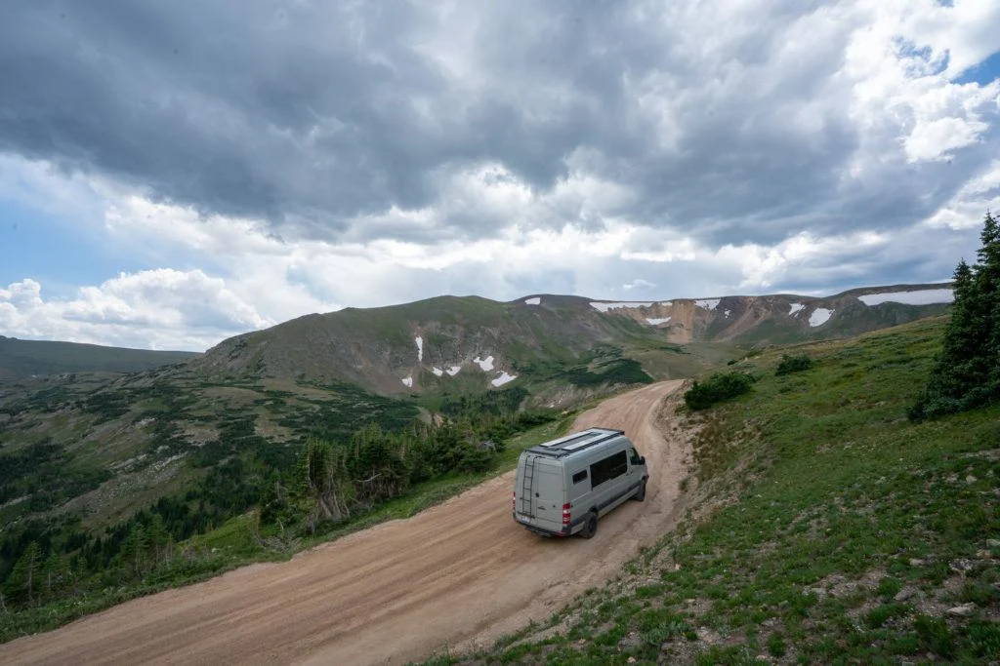

My VanLife themesite
Welcome to my VanLife themesite made for the course User Interfaces.
I made this website using Bootstrap version 5.3.x with custom css,
Bootstrap snippets, and elements from the docs.

